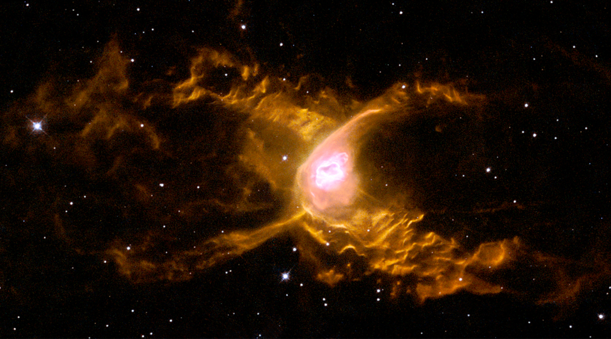
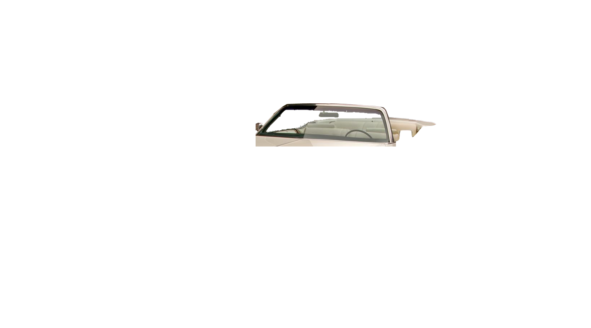
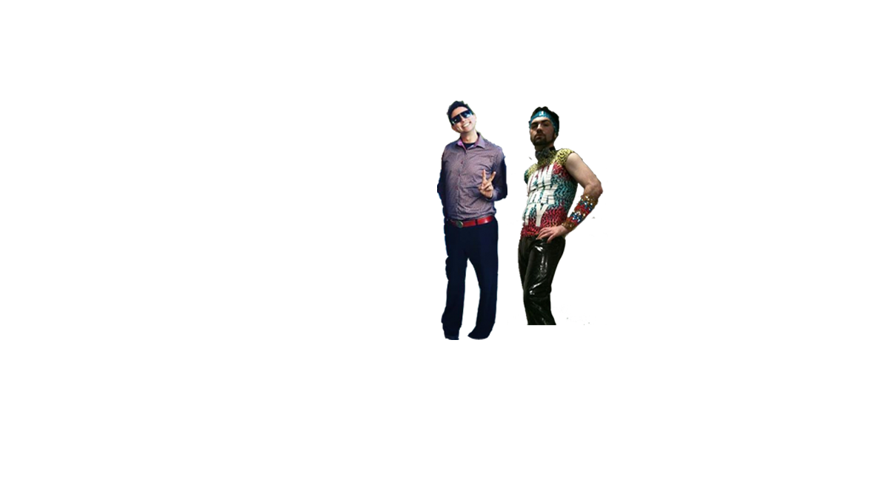
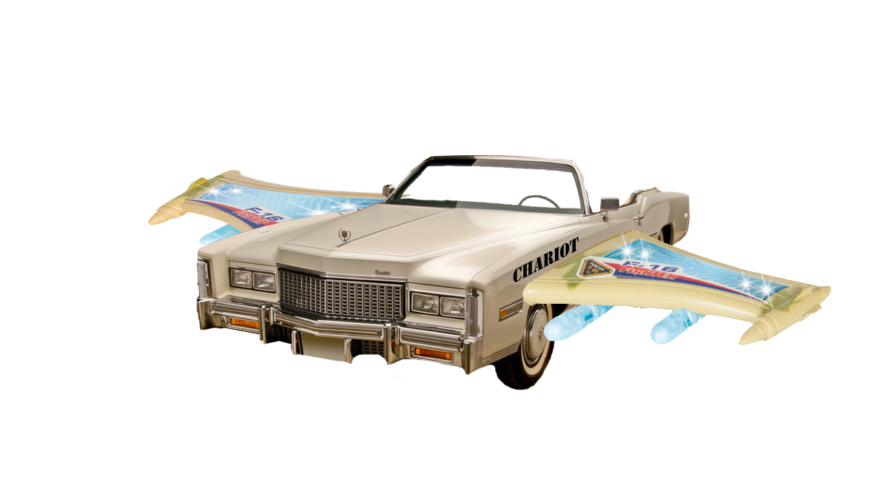

STAR SERVICE
Zippy Stardust and Donnie Service travel in outer space as if on holiday.
They visit the hot spots in the galaxy, taking in the night life in all of the great cities. They visit the nebulas, shooting stars, black holes and ice belts the way that we visit yosemite and other natural wonders. They make new friends wherever they go, sharing their stories, memories, and most important of all music. Home is a distant yet lingering memory, they've been traveling for so long that it's like a dream half remembered.